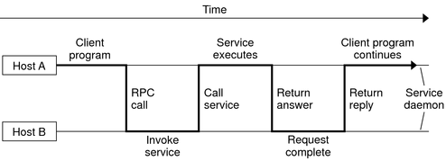
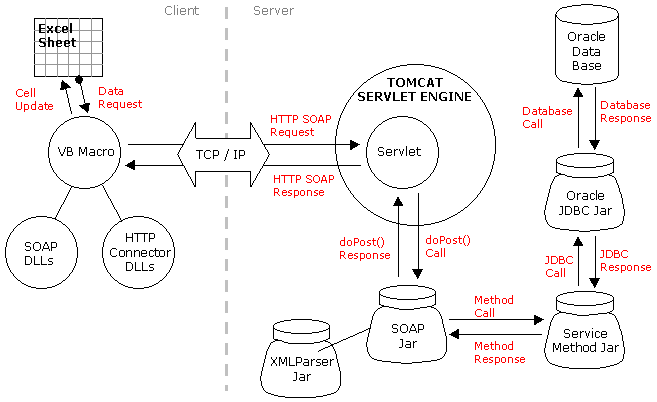
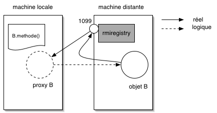
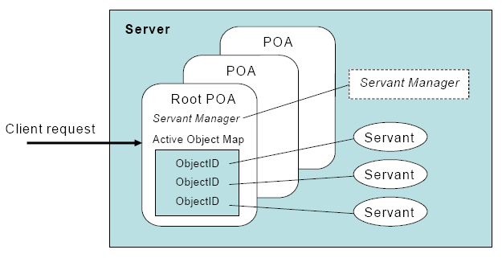

IMW: Middleware
Table of Contents
- 1 Introduction
- 2 Sun RPC
- 2.1 Background
- 2.2 Interoperability
- 2.3 RPC service identification
- 2.4 Service Registration (portmap)
- 2.5 Service Registration (prognum)
- 2.6 Standard RPC services
- 2.7 Running Services
- 2.8 Programming with ONC RPC
- 2.9 Server-side steps
- 2.10 Client-side steps
- 2.11 Example of high-layer usage (server side 1/2)
- 2.12 Example of high-layer usage (server side 2/2)
- 2.13 Example of high-layer usage (client side 1/2)
- 2.14 Try It
- 2.15 Another way:
rpcgen - 2.16 Example with
rpcgen - 2.17 Example with
rpcgen(contd) - 2.18 RPCL in Brief (enumeration, constants & simple)
- 2.19 RPCL in Brief (arrays)
- 2.20 RPCL in brief (typedef)
- 2.21 RPCL in Brief (pointers)
- 2.22 RPCL in Brief (struct)
- 2.23 Tips & Tricks
- 3 Java RMI
- 3.1 History
- 3.2 RPC in the world of RMI
- 3.3 The Remote class
- 3.4 The Remote class and interface
- 3.5 The Serializable class
- 3.6 Registering the services
- 3.7 Example 1: Remote object with primitive types
- 3.8 Example 1: Service Description
- 3.9 Example 1: Service Implementation
- 3.10 Example 1: Service Registration
- 3.11 Example 1: Client code
- 3.12 Trouble shooting 1
- 3.13 Trouble shooting 2
- 4 Corba
1 Introduction
1.1 Technologies for Distributed Systems
- Extremely fast evolution since 1985:
about a technology every 5 years.
- Implementations adapt to up-to-date technology
e.g If networks go faster, it is possible to convey bigger messages.
If the cost of some hardware becomes low, no need to spare it.
1.2 Technologies change but … concepts stay
- Client-server is the central concept:
The client can make a request at any time,
The server permanently waits for incoming requests

1.3 Middleware: definition
1.3.1 What is middleware? B_block
- A sofware layer between the OS and the application allowing a set of distributed computers to communicate in a standardized way.
1.3.2 Middleware provides inter-machines communication facilities,
but may also include services, such as authentification services, resource directories, distributed file catalogs, …
1.4 A Time-line of technologies

1.5 Principle Design Choices
- Abstraction vs. Performance
- Interoperability
- Versatility
1.6 Abstraction
1.6.1 Abstraction of communication primitives
- too low level: rapidly obsolete, lower programming productivity
- too high level: difficult to optimize for performance
1.6.2 Abstraction Trade-off
- independent from the architecture: execute across different systems without source code modification
- Hide details related to communication/synchronization management
(e.g
Remote Procedure Callsmore abstract thansockets)
1.7 Interoperability
1.7.1 Machine-independent
e.g Sun RPC \vspace{5mm}
1.7.2 OS-independent
e.g Java-RMI \vspace{5mm}
1.8 Versatility
The more general, the more versatile
- Example 1: SOAP communicates through XML pieces of text
- \(\Rightarrow\) SOAP toolkits can be found for almost all languages.

2 Sun RPC
2.1 Background
Sun RPC (aka RPC ONC (Open Network Computing))
- are the original RPC (RFC 1831), introduced by Sun in 1988
- motivation: provide a support to inter-machines services
- NFS as first target, NIS, ….
- is open source software (BSD license since 2009)
2.2 Interoperability
- ONC RPC allow programs on different OS and machines to communicate
- It may be in different languages but C in 99% cases.
- Relies on XDR (eXternal Data Representation)
2.3 RPC service identification
2.3.1 Services are identified by B_block
- the program name (
prog_name) - the program version (
prog_ver) - the function name
2.3.2 Example B_beamercolorbox
program MYPROG { version VERSION_ONE { void MYPROG_NULL(void) = 0; answer MYPROG_MYFUNC(data) = 1; } = 1; } = 0x2000:0001;
2.4 Service Registration (portmap)
This service must be registered in a directory service generally called portmapper
- acts as a name server
- converts : <progname + ver + protocol> to <portnumber>
- exact service name depending on sytem/distribution :
rpcbind(or sometimesportmap, orrpc.portmap) - attached to port 111
2.5 Service Registration (prognum)
Registration needs (rpcregister 1st arg for example)
a 32-bit identifier (sometimes called RPC port)
| Range (hex.) | role |
|---|---|
| 00000000-1fffffff | defined by rpc@sun.com |
| 20000000-3fffffff | defined by user |
| 40000000-5fffffff | transient (dynamic server) |
| 60000000-ffffffff | reserved |
2.6 Standard RPC services
2.6.1 file /etc/rpc B_block
portmapper 100000 rstatd 100001 rusersd 100002 nfs 100003 ypserv 100004 mountd 100005 ypbind 100007 walld 100008
2.7 Running Services B_ignoreheading
% rpcinfo -p
program vers proto port
100000 2 tcp 111 portmapper
100000 2 udp 111 portmapper
536870913 1 udp 58764
536870913 1 tcp 65106
Two last lines are one user program.
2.8 Programming with ONC RPC
Two layers:
2.8.1 The higher layer: small set of functions to describe and call services in a simple way.
- Essential primitives:
registerrpc()andcallrpc()
- However, limitations: udp only, no auth, and encoding/decoding by hand.
2.8.2 The lower layer: 20+ functions to fine tune the calls.
- Much more complex, used for stressed services, for example to implement asynchronous RPC and authentification.
2.9 Server-side steps
The server must register: asks the local portmap to:
- create a new entry so that clients can be routed
- associate a service number and the address of the function that implements it, or the address of the dispatcher.
2.9.1 The primtives are
svc_register()andpmap_set()(low level)rpcregister()(high level)- on exit,
svc_unregister(),pmap_uset()
2.10 Client-side steps
The client must initialize (1), lookup in remote portmap to find the service (2), then, several calls can be made afterwards (3):
clnt_create()/clnttcp_create()/clntudp_create(),pmap_getport()clnt_call()
The higher level callrpc() does steps 1, 2 and 3 in a row.
2.11 Example of high-layer usage (server side 1/2)
Define the service on the server:
#include <rpc/xdr.h> #include <rpc/rpc.h> int* my_function(int *n) { static int res; *n = *n + 1; res= *n; return (&res); }
2.12 Example of high-layer usage (server side 2/2)
Register the service on the server:
#define PROGNUM 0x20000100 #define VERSNUM 1 #define PROCNUM 1 int main (void) { registerrpc( PROGNUM, VERSNUM, PROCNUM, my_function, /*ptr to function*/ (xdrproc_t) xdr_int, /*encode input*/ (xdrproc_t) xdr_int);/*decode output*/ svc_run(); /* server starts listening ... */ }
2.13 Example of high-layer usage (client side 1/2)
Call the service from the client:
int main (int argc, char **argv) { int n=0x41424344; char *host = argv[1]; int stat; stat = callrpc(host, PROGNUM, VERSNUM, PROCNUM, (xdrproc_t) xdr_int, //intput encoding (char *) &n, //input param (xdrproc_t) xdr_int, //output decoding (char *) &res); //return of func }
2.14 Try It
- Sources : Example 1
Have you noticed?
- There are only 1 parameter for input and 1 for output
- the variable returned
resis declaredstaticbecause it may have to survive for a while
2.15 Another way: rpcgen
- Taking care of conversion through XDR is difficult
- The
rpcgencompiler automates the process of writing RPC applications rpcgenaccepts interface descriptions in RPCL (RPC Language)- and generates skeletons programs (C code)
2.16 Example with rpcgen
- Consider an operation
addition, that adds up 2ints - Describe this service in a file
myservice.x
struct data { int arg1; int arg2; }; typedef struct data data; struct response { int result; unsigned char error; }; typedef struct response response; program MYCOMPUTATION { version VERSION_ONE{ void MYCOMPUTATION_NULL(void) = 0; response MYCOMPUTATION_ADDITION(data) = 1; } = 1; } = 0x20000001;
2.17 Example with rpcgen (contd)
- Generate the skeletons
% rpcgen -a myservice.x
- The following files are generated
myservice.h /* parameter definitions */ myservice_xdr.c /* XDR conversion */ myservice_svc.c /* stubs server */ myservice_clnt.c /* stubs client */ myservice_server.c /* server code */ myservice_client.c /* client code */
2.18 RPCL in Brief (enumeration, constants & simple)
2.18.1 Enumerations and Constants
enum colortype { RED = 0, GREEN = 1,BLUE = 2 }; const PI = 3.14;
2.18.2 Simple Declarations
int length; colortype c;
2.18.3 Added types (bool and string)
bool: boolean, can take TRUE or FALSE valuesstring: translated tochar *(See variable length array).
2.19 RPCL in Brief (arrays)
2.19.1 Fixed-length arrays
int length[5]; color palette[8];
2.19.2 Variable-length arrays
- The maximum size is specified between angle brackets, or may be ommitted:
int notes_serie<20>; # at most 20 int heights<>; # unlimited string message<256>;
each will translate to a C struct, e.g:
struct { u_int heights_len;/* # of items in array */ int *heights_val; /* pointer to array */ } heights;
2.20 RPCL in brief (typedef)
2.20.1 Type definitions
Same syntax as C typedef
typedef string name_t<255>; typedef string longstring<>;
will be translated into C code:
typedef char *name_t; typedef char *longstring;
2.21 RPCL in Brief (pointers)
- Pointer declarations are as in C. Address pointers are not sent over the network. Instead, data pointed to are copied. This is useful for sending recursive data types such as lists and trees.
tree_t *t;
2.22 RPCL in Brief (struct)
- Translates as is in C, excepted that an extra typedef is generated.
struct coord { int x; int y; };
Translates to:
struct coord { int x; int y; }; typedef struct coord coord;
which allows to use coord instead of struct coord
2.23 Tips & Tricks
2.23.1 Linux B_block
- Install: rpc lib provided by package
libtirpc-dev(0.2.2-5 on ubuntu 12.04) - Run: a portmapper is provided by package
rpcbind - Run:
svc_register()might refuse to register ("credentials problem") \(\Rightarrow\) Start server as root or in sudo mode. - Initialize array variables before calling remote functions ("Can't encode arguments" error).
2.23.2 MacOSX B_block
- Install: the 'Command line tools' element from Xcode in the distrib or download it fom Apple .
- Use:
rpcgen -Cto force generation of ANSI-C code
3 Java RMI
3.1 History
- Created by Sun in 1998
- Java only
- Available since JDK >= 1.1
- Since JDK 1.5, stubs are automatically generated (no
rmic)
3.2 RPC in the world of RMI
- RMI provides access to objects and their methods
- In contrast to Sun RPC, not only data can be passed to remote computations, but also objects that can contain code and data.\\[5mm]
- There are 2 ways to communicate in this object-oriented
paradigm:
- through the
Remoteclass - through the
Serializableclass
- through the
3.3 The Remote class
definition: An object of the Remote class can be used remotely. It can be used:
- in the address space of the JVM that created it,
- in the address spaces of other JVMs through handles (aka proxies).
 The call to a remote object's method is exactly (syntactically) the same as a local one.
3.4 The Remote class and interface
3.4.1 A Remote class must be defined in 2 parts
- an interface
- the class itself
3.4.2 Interface B_block
public interface MyExample extends Remote {...}
3.4.3 Class B_block
public class MyExampleImpl extends UnicastRemoteObject implements MyExample { ... }
3.5 The Serializable class
definition: an object of the class Serializable is an object that can be copied from one address space to another.
3.6 Registering the services
A process called rmiregistry is in charge of service registration
(Equivalent of portmapper)
3.6.1 Characteristics of rmiregistry B_block
- runs on the same host as the services
- default port is 1099
- can be started by program
3.7 Example 1: Remote object with primitive types
Example parameter passing using primitive types (e.g. int, float, ..) or arrays (e.g. String)
- In general, parameters just need to be serializable (java.io.Serializable).
3.7.1 The different pieces of code B_block
- The service: description of the function prototype
- The service: the implementation of the service
- The server: a generic code which registers the service
- The client: the code that uses the service
3.8 Example 1: Service Description
A service is described by an interface.
- known by the client and the server.
import java.rmi.Remote; import java.rmi.RemoteException; public interface Operation extends Remote { public int addition(int a, int b) throws RemoteException ; }
3.9 Example 1: Service Implementation
- Only the server implements the service.
import java.rmi.server.UnicastRemoteObject ; import java.rmi.RemoteException ; import java.net.InetAddress.* ; import java.net.* ; public class OperationImpl extends UnicastRemoteObject implements Operation { public OperationImpl () throws RemoteException { super(); }; public int addition(int a, int b) throws RemoteException { return( a + b) ; } }
3.10 Example 1: Service Registration
- The first server task is to register the service in the rmiregistry under a name (here Operation)
public class Serveur { public static void main(String [] args) { try { OperationImpl une_op = new OperationImpl (); Naming.rebind("rmi://"+args[0]+"/Operation",une_op) ; System.out.println("Serveur pret"); } catch (Exception e) { System.out.println(re) ; } }
3.11 Example 1: Client code
- gets a reference to the the service in the registry (proxy)
- call the service using that reference
import java.rmi.* ; import java.net.MalformedURLException ; import java.io.*; public class Client { public static void main(String [] args) { try { Operation o = (Operation) Naming.lookup("//"+args[0]+"/Operation"); System.out.println("Client: 33+45= ?"); int r = o.addition( 33, 45 ); System.out.println("33+45="+ r ); } catch (Exception e) { System.out.println(e) ; } } }
3.12 Trouble shooting 1
3.12.1 Observation B_block
The client experiences a connection refused error when
contacting the server.
3.12.2 Why? B_block
$JAVA_HOME/lib/security/java.policy is too restrictive wrt sockets
3.12.3 Solution B_block
To override the standard, run
java -Djava.security.policy=more_perm Server
where fichier contains, for instance:
grant {
permission java.net.SocketPermission
"*:80-65535","connect,accept,listen,resolve";
permission java.security.AllPermission;
};
3.13 Trouble shooting 2
3.13.1 Observation B_block
When calling the RPC (hence after the lookup), the client ends with:
java.rmi.ConnectException: Connection refused to host: 127.0.0.1
3.13.2 Why? B_block
In some linux distributions, the name resolution for hostname
takes 127.0.0.1 from /etc/hosts instead of public IP.
3.13.3 Solution B_block
run the server by overriding its IP
java -Djava.rmi.server.hostname=<my ip here> Server
4 Corba
4.1 History
4.1.1 Context
- A specification defined by the Object Management Group (OMG), composed of about 1000 members
- currently CORBA 3.0
- Implementors then propose implementations
4.1.2 Implemenations
Commercial :
- ORBIS, IONA, VisiBroker, ORBacus, ….
Open source:
- JDK, MICO, JacORB, TAO, …
4.2 Characteristics
CORBA = Common Object Request Broker Architecture
4.2.1 A RPC framework
- object oriented
- multiple-OS, multiple languages can be involved
- analogy of the "software bus"
4.2.2 External Services
- helper services, can connect to the bus
- services: naming, transaction, persistence …
4.3 IDL
The Interface Definition Language: equivalent to the RPC Language.
- defines the methods a server proposes
- defines the data that can be accessed from the client (get/set)
From IDL, generation of concrete code to represent data and methods in the chosen language.
4.4 IDL structure
Three hierarchical elements:
Module: namespaces (correspond to Java packages)Interface: logical groups of methods- methods : prototypes of the methods implemented by the server
Example:
module HelloApp { interface Hello { string sayHello(); oneway void shutdown(); }; };
4.5 IDL types
Types and number of bytes between parenthesis:
- boolean ={TRUE,FALSE}
- octet (1)
- signed : short (2), long (4), long long (8)
- unsigned : unsigned short (2), unsigned long (4), unsigned long long (8)
- floats : float (4), double (8), long double (16)
- characters: char (1, iso-latin-1), string (var), string<n> (n), wchar (2, unicode), wstring (var of wchar)
4.6 IDL type mapping to Java
| IDL | Java | IDL | Java | |
|---|---|---|---|---|
| octet | byte | unsigned short | short | |
| short | short | unsigned long | int | |
| long | int | unsigned long long | long | |
| long long | long | char | char | |
| float | float | wchar | char | |
| double | double | string | String | |
| long double | N/A | wstring | String |
4.7 IDL Methods
4.7.1 General Form B_block
<returntype>; methodname([<mode> <type> <parameterid>;]*) [raises [exceptions]+];
- mode={in, out, inout} for input, output, and modified parameters resp. (View from the server).
- type: all primitive or constructed type with typedef (constructed before method call)
Method names must be unique (no overloading).
4.8 IDL Oneway Methods
4.8.1 Normal method call: waits for return and return is guaranteed
4.8.2 Oneway call: no wait, but not guaranteed execution
- no return result (
voidreturn type) - no
outorinoutparameter
4.9 IDL Parameter Passing
4.9.1 Reference or Copy B_block
A parameter is passed
- by reference for CORBA Object
- by copy for primitives types (float, long, …) and constructed types (struct, sequence,…)
4.9.2 Observations
in: client provides the value. If modified by the server, not updated on the client.inout: client provides the value, updated on the client.out: the server provides the value, updated on the client.
4.10 POA
4.10.1 OA and POA B_block
- Object Adapter: mechanism that connects a request using an object reference with the proper code to service that request.
- Portable Object Adapter: a particular type of object adapter that is defined by the CORBA specification.

4.11 POA behavior
4.11.1 Thread policy:
- ORBCTRLMODEL (default): The POA is responsible for assigning requests to threads.
- SINGLETHREADMODEL: The POA processes requests sequentially
4.11.2 Lifespan policy:
- TRANSIENT (Default): Objects implemented in the POA cannot outlive the process in which they are first created. Once the POA is deactivated, an OBJECTNOTEXIST exception occurs when attempting to use any object references generated by the POA.
- PERSISTENT Objects implemented in the POA can outlive the process in which they are first created.